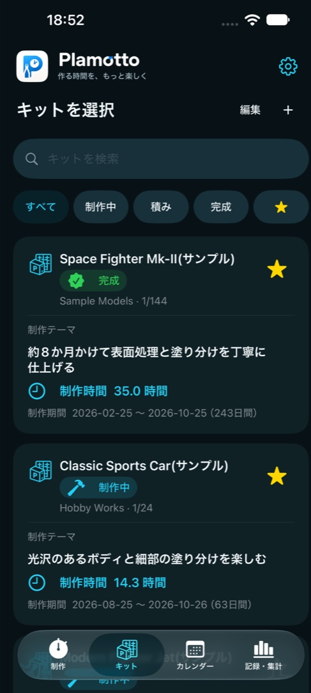

キット別の制作ログ
作業の進み具合やメモをキットごとに整理し、制作の始まりから完成までの記録を残せます。
iPhone向け制作ログ
キットごとに制作工程と作業時間を記録。最初の作業から完成まで、積み重ねた時間を振り返れます。
App Storeで見るiPhone対応 · iOS 17以降

作業の進み具合やメモをキットごとに整理し、制作の始まりから完成までの記録を残せます。
タイマーで作業時間を記録し、組み立てや塗装などの工程別に、かかった時間を確認できます。
作業した日がひと目でわかり、カレンダーから日ごとの制作履歴を振り返れます。
曜日や時間帯ごとの制作傾向を分析し、制作の記録をレポートにまとめられます。